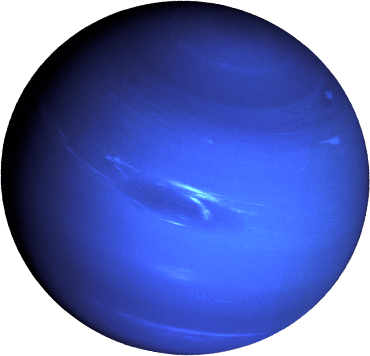

| Planet Name |
Mass (kg) |
Diameter (km) |
Mean Density (kg/m3) |
Escape Velocity (m/s) |
Avg. Distance from Sun |
Rotation Period (length of day in Earth days |
Revolution Period (length of year in Earth days) |
 Venus Venus |
4.87 x 1024 |
12104 |
5250 |
10400 |
0.723 AU (108,208,930 km) |
243.02 |
224.7 |
 Jupiter Jupiter |
1.90 x 1027 |
142,800 |
1314 |
59500 |
5.203 AU (778,412,020 km) |
0.41 (9.8 Earth hours) |
11.86 |
 Saturn Saturn |
5.69 x 1026 |
120660 |
690 |
35600 |
9.537 AU (1,426,725,400 km) |
0.44 (10.2 Earth hours) |
29.46 |
|  Neptune |
1.02 x 1026 |
49528 |
1640 |
23300 |
30.07 AU (4,498,252,900 km) |
0.67 (19.1 hours) |
60,190 (164.8 Earth years) |